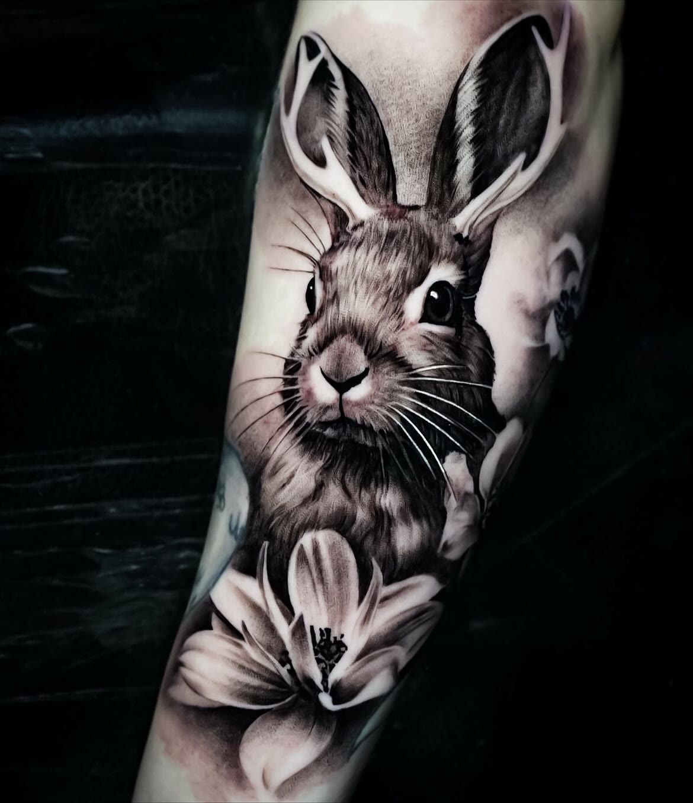
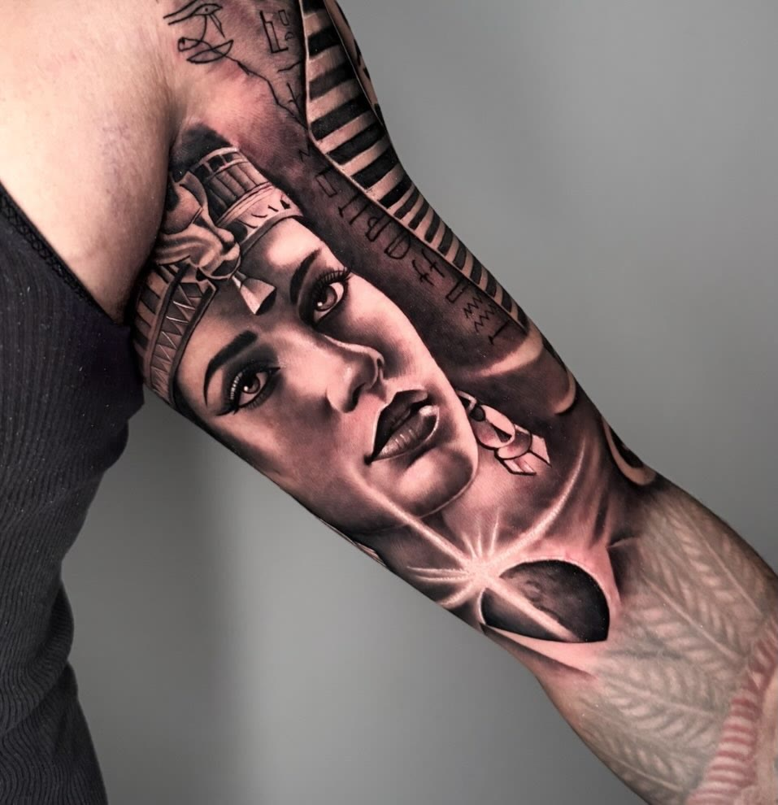
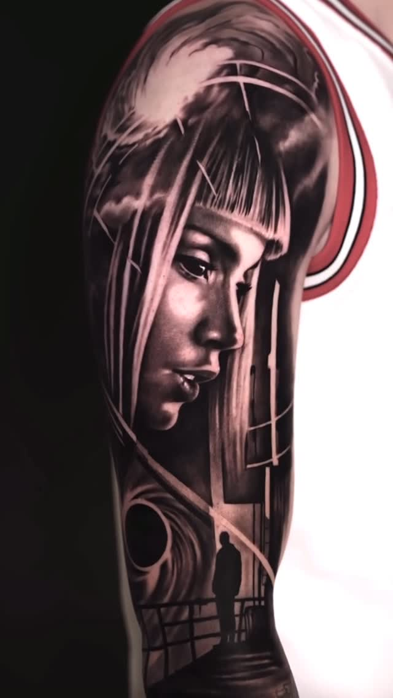
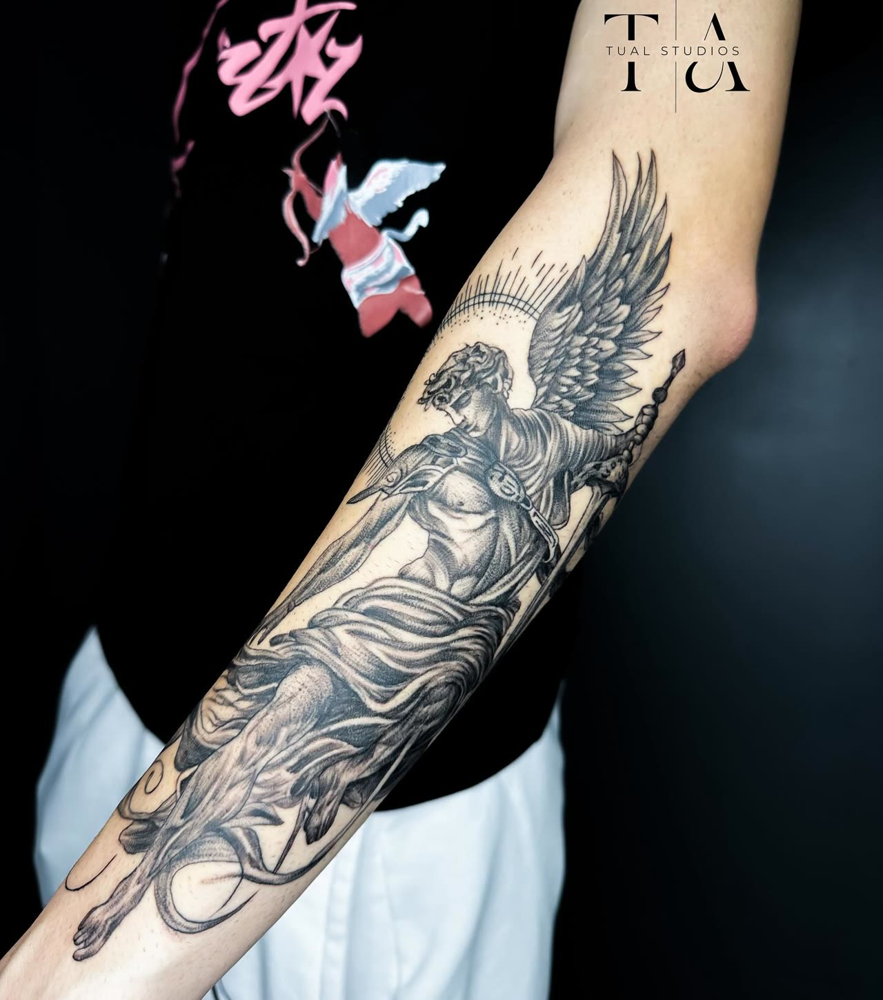
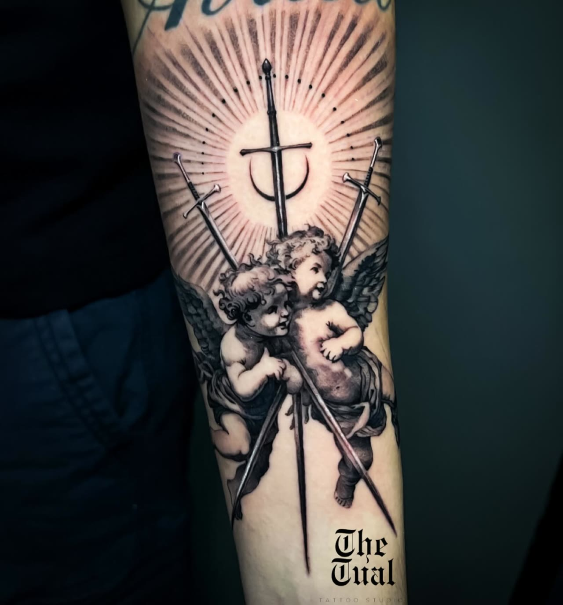
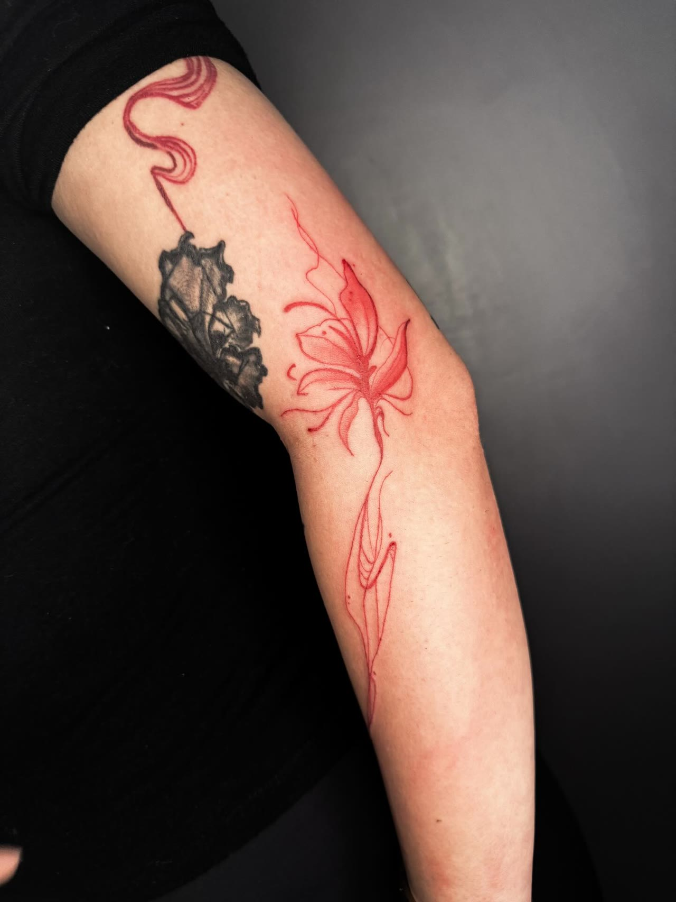
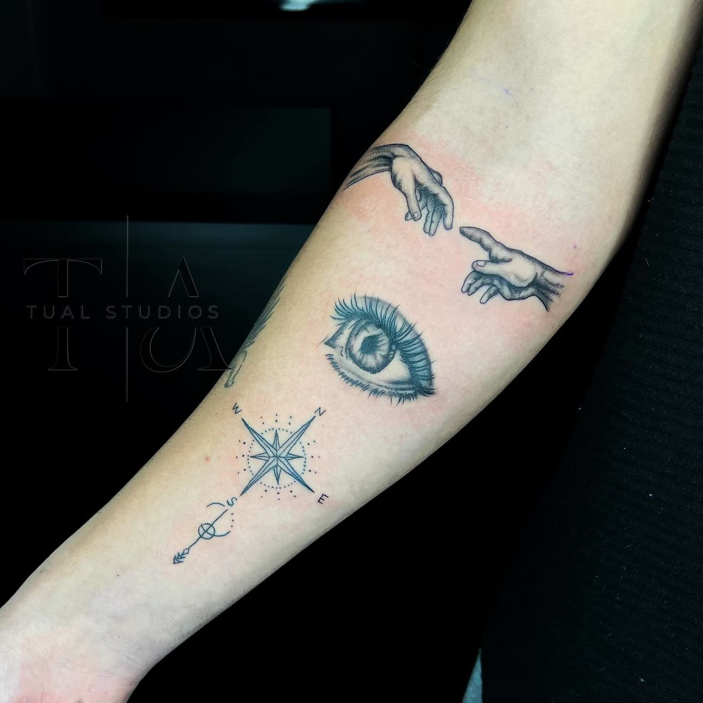
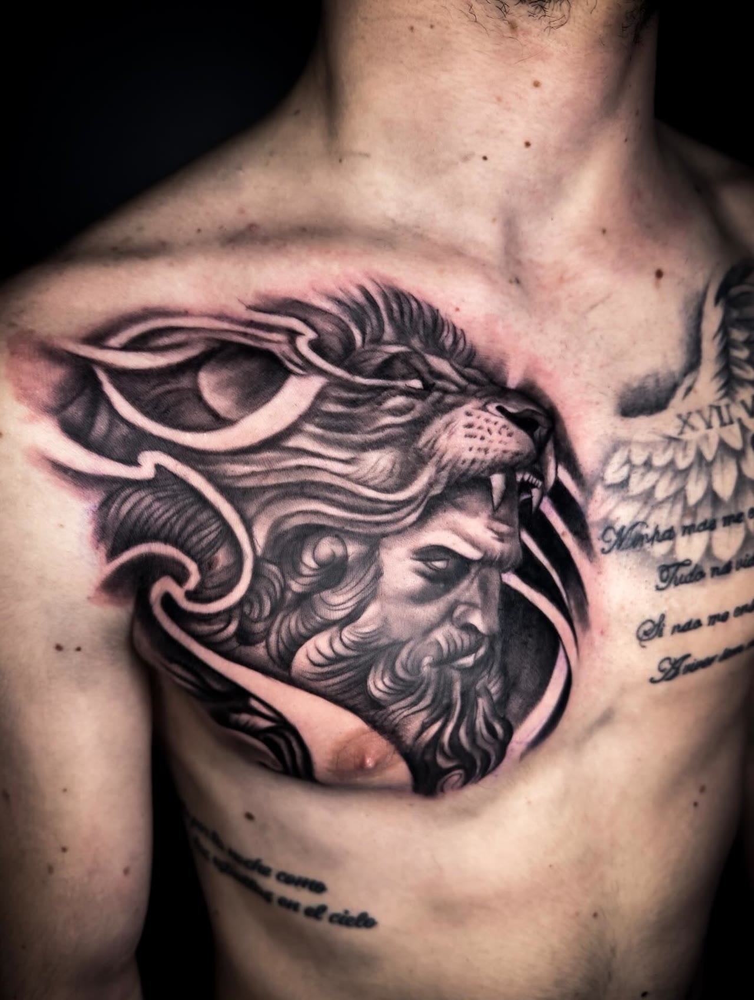
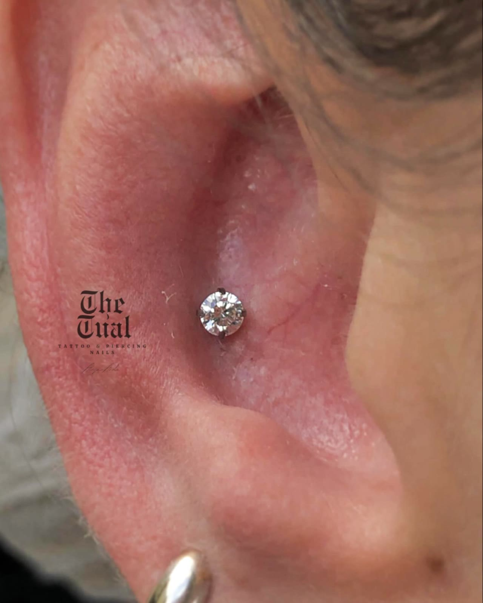
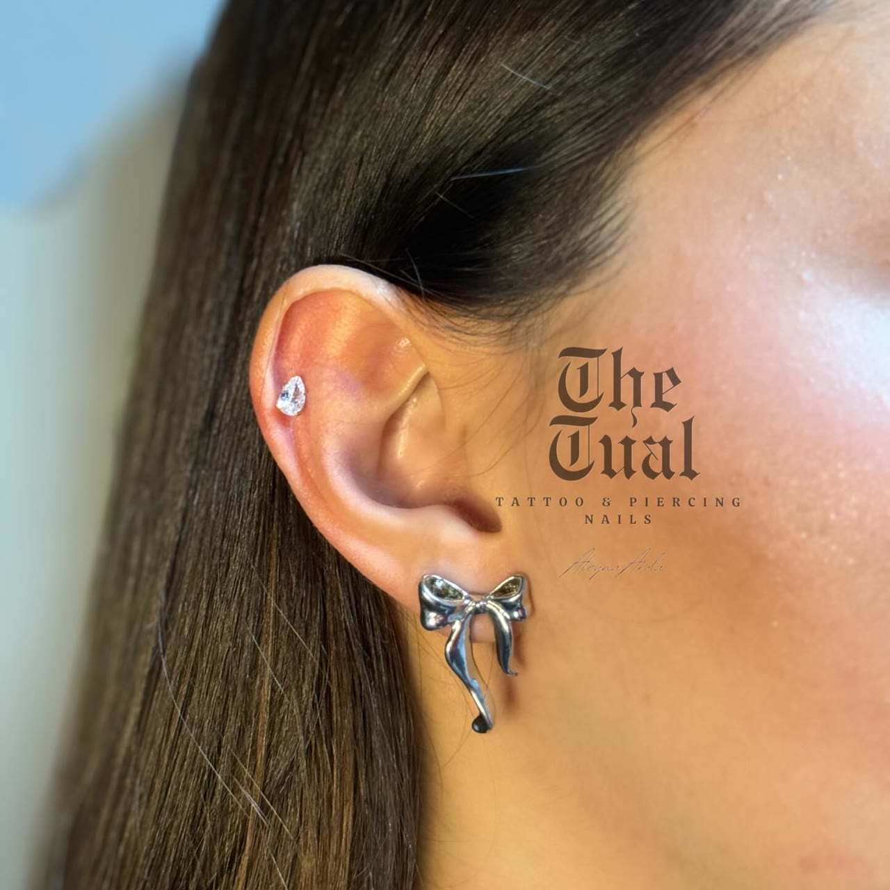

Ömür boyu taşıyacağınız işi özenle çizeriz.
Gerçekçi siyah-gri, ince çizgi ve yazı dövmeleri, titanyum piercing. Beylikdüzü’nde, Kubist Park’ta.
5,0 Google’da 34 yorumHer gün 10.00–21.00
Hangi stil size göre?
Stüdyoda en çok yapılan dört iş. Kartın üstüne gelin ya da dokunun, arkasında kısa bir açıklama var.
Son çalışmalardan
Hepsi stüdyoda, kendi elimizden çıktı.

Tavşan ve zambak 
Kleopatra 
Kadın portresi 
Melek 
Melekler 
Kırmızı çiçekler 
Küçük ince çizgiler 
Göğüs çalışması
Daha fazla çalışma Instagram hesabımızda.
Instagram’da tümü
Fikirden dövmeye
Aklınızda bir fikir olması yeter, gerisini birlikte netleştiririz.
- YazınFikrinizi, dövmenin yerini ve aşağı yukarı boyutunu DM ya da WhatsApp’tan anlatın.
- ÇizimSize özel tasarım hazırlanır, beğenene kadar üzerinde konuşulur.
- ŞablonÇizim deriye mor şablonla aktarılır; yerini ve boyutunu aynada birlikte kontrol edersiniz.
- SeansKüçük işler kısa sürer. Büyük kol çalışmaları planlanır, bazıları tek seansta biter.
Piercing
Kulak memesinden kıkırdağa. Takıyı birlikte seçer, yerini aynada belirleriz.
Titanyumİmplant kalitesinde takılar
TırnakStüdyoda manikür ve pedikür için de randevu alabilirsiniz.


Yaptıranlar ne diyor?
5,0Google’da 34 yorum
Aleyna Hanım’a teşekkür ediyorum. İlk defa dövme yaptırdım ve devamı geldi. El becerisine diyecek bir şey yok.
Bebek gibi oldu, çok beğendim. Çok özenli ve titiz çalıştı, ellerine sağlık.
Kolumu kaplattım, iç dış çok iyi oldu. Sırtıma da yazı yazdırdım. Çok memnun kaldım, ellerinize sağlık.
Kubist Park, 2. kat
- Adres
- Kubist Rezidans, Beykent Avrupa Cad., Adnan Kahveci Mah., Kat 2 Daire 183, Beylikdüzü
- Açık
- Her gün 10.00–21.00
- Telefon ve WhatsApp
- 0541 428 36 28